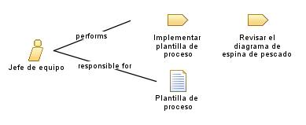

|
Encargado de liderar y coordinar un equipo de trabajo en el desarrollo del módulo de facturación y contabilidad. Su objetivo principal es asegurar que el equipo esté alineado, motivado y trabajando de manera eficiente para cumplir con los objetivos del proyecto.
|
| Synonyms:
Líder de equipo, coordinador de equipo. |
|
Relationships
 |
| Primary Performs |
|
| Additionally Performs |
|
| Modifies |
|
Main Description
|
Lidera y gestiona el equipo encargado del desarrollo del sistema. Trabaja en estrecha colaboración con los analistas de
negocio, los analistas de requerimientos y los desarrolladores para asegurar la comprensión y ejecución adecuada de las
actividades relacionadas con el proceso inicial. Su función principal es asignar tareas, establecer metas, supervisar
el progreso del equipo y facilitar la comunicación y la colaboración efectiva entre los miembros del equipo. Además, se
encarga de identificar y resolver posibles conflictos o problemas que puedan surgir durante el desarrollo del
proyecto.
|
Staffing
| Skills |
Liderazgo, coordinación de equipos, comunicación efectiva, delegación de tareas, resolución de conflictos, |
| Synonyms |
Líder de equipo, coordinador de equipo. |
|